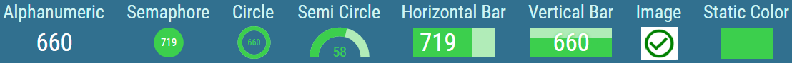

Columns¶
- Column
Specifies what type of value should be displayed by the column. Each type can be used multiple times per each Grid. Available types are determined by figured Source Tables.
- Header Text
Description of the column, displayed as its header. Header text is also used as the name of the column’s item in the Columns list.
- Width Ratio
Relative width of the column to other columns. For example a column with ratio 50 will be half the size of a column with ratio 100.
- Horizontal Alignment
Inheritable
Controls, where column’s header and values should be aligned on the horizontal axis.
- Padding
Inheritable
The size of a padding between the text and cell’s border in “em” units. 1 em equals to the font size of the associated text.
The padding is applied to the side where the text is horizontally aligned.
- Appearance
The style of the Column
- Header
Visual configuration of column’s header
- Text
Text displayed in the header.
- Text Color
Inheritable
For more information see Color Field section.
Color of the text.
- Background Color
Inheritable
For more information see Color Field section.
Color of the background.
- Text Style
Inheritable
For more information see Text Style section.
Type of font to use and whether bold or italic text should be used.
- Font Size Coefficient
Inheritable
The font size is calculated by multiplying available height for the text by font size coefficient.
- Values
Visual configuration of column’s values
- Presentation Type
Required
Defines, how column’s values should be presented- Alphanumeric
The value is presented as a pure text, without any additional graphical elements.
- Semaphore
Available only when column displays numeric data.
The value is enveloped in a colored circle. The circle can change its color, depending on the value. For example by turning red, when the value is considered bad. The semaphore is used, when the state is more important than the value itself.
- Circle
Available only when column displays numeric data.
The value is accompanied by a circle indicator. The indicator represents the level of fulfillment of a configured goal.
- Semi Circle
Available only when column displays numeric data.
The value is accompanied by a semi-circle indicator. The indicator represents the level of fulfillment of a configured goal.
- Horizontal/Vertical Bar
Available only when column displays numeric data.
The value is accompanied by a rectangular indicator. The indicator represents the level of fulfillment of a configured goal.
- Image
An image is applied.
- Static Color
A static color is applied.
Figure 1: KPI presentation types.

- Display Format
Required
Format of the value. When Raw is selected, the value is displayed without any transformation.
Available options depend on the type of selected column.
- Custom Display Format
Available only when “Custom” is selected as a Display Format
For more information see Custom Display Format section.
Custom format of the value.
- Text/Semaphore/Circle/Semi Circle/Bar Color
Inheritable (according to the selected presentation type)
For more information see Color Field section.
Color of the text.
- Semaphore/Circle/Semi Circle/Bar Color
Inheritable (according to the selected presentation type)
Available only if “Alphanumeric” presentation type is not selected
For more information see Color Field section.
Color of the Semaphore/Circle/Semi Circle/Bar.
- Empty Bar Color
Inheritable
Only if Horizontal/Vertical Bar is selected as a presentation type
For more information see Color Field section.
Background color of the bar itself.
- Alternate Row Text/Semaphore/Circle/Semi Circle/Bar Color
Inheritable (according to the selected presentation type)
Available only if “Alternate Row Colors” is enabled for the grid
For more information see Color Field section.
Alternating color of the text.
- Alternate Row Semaphore/Circle/Semi Circle/Bar Color
Inheritable (according to the selected presentation type)
Available only if “Alternate Row Colors” is enabled for the grid
Available only if “Alphanumeric” presentation type is not selected
For more information see Color Field section.
Alternating color of the Semaphore/Circle/Semi Circle/Bar.
- Alternate Row Empty Bar Color
Inheritable
Only if Horizontal/Vertical Bar is selected as a presentation type
For more information see Color Field section.
Alternate Row background color of the bar itself.
- Background Color
Inheritable
Not available, if the “Image” presentation type is selected
For more information see Color Field section.
Color of the background.
- Alternate Row Background Color
Inheritable
Available only if “Alternate Row Colors” is enabled for the grid
For more information see Color Field section.
Alternating color of the row background.
- Text Style
Inheritable
Not available, if the “Image” presentation type is selected
For more information see Text Style section.
Type of font to use and whether bold or italic text should be used.
- Text Sizing
Inheritable
Not available, if the “Image” or “Static color” presentation type is selected
Controls, how font size is calculated.
Available options are:- Regular
Font is sized relatively to grid column’s height.
In case of Circle, Semi Circle and Semaphore presentation type, font is sized relatively to Circle’s/Semi Circle’s/Semaphore’s height.
- Best Fit
Font is dynamically sized to always fit inside column.
- Custom Null Value
Inheritable
A custom value that is displayed when the value is not available.
- Font Size Coefficient
Available only if “Regular” is selected as a text sizing
Not available if “Image” or “Solid Color” is selected as a presentation type
The font size is calculated by multiplying available height for the text by font size coefficient. In the case of semicircle, circle and semaphore presentation type combined with the regular sizing, available height is defined by the height of the circle/semicircle/semaphore. Otherwise, by the height of the container.
- File
Available only if the “Image” presentation type is selected
For more information see Static content chapter.
Relative path of the image, that should be displayed. Using the {{value}} placeholder in the path, an image can dynamically change, based on the Grid value.
- Image Horizontal Alignment
Available only if the “Image” presentation type is selected
Controls, where the image should be aligned on the horizontal axis.
Available options are Left, Center and Right
- Image Vertical Alignment
Available only if the “Image” presentation type is selected
Controls, where the image should be aligned on the vertical axis.
Available options are Top, Middle and Bottom
- Image Size
Available only if the “Image” presentation type is selected
Decides, how the image is adjusted to the Segment’s size.- Cover
The image is resized to cover the whole Segment, without deforming the image. No uncovered spaces are present. However one of image’s axis may overlap outside of the Segment’s boundaries.
Figure 1: Cover

- Contain
The image The image is resized to be fully displayed, in largest possible size, without deforming the image. Uncovered spaces, filled with the Background Color, are present.
Figure 2: Contain

- Fill
The image fully fills the entire Segment’s size. The image may be deformed. No uncovered spaces or overlapping occurs.
Figure 3: Fill

- Custom
When selected, Custom Size Height and Custom Size Width fields are displayed. These fields define size of the image in percentages of the Segment’s size.
Figure 4: Custom

- Effects and Filters
Available only if the “Image” presentation type is selected
Controls, adjusting the image, such as Brightness, Contrast, Opacity etc. Click to revert image to its default values.
- Choose Display Range Min Manually
Available only when “Circle”, “Semi Circle” or “Bar” presentation type is selected.
Whether the minimum on the value range is defined manually.- Min
Value, that defines the minimum on the value range.
- Choose Display Range Max Manually
Available only when “Circle”, “Semi Circle” or “Bar” presentation type is selected.
Whether the maximum on the value range is defined manually.- Max
Value, that defines the maximum on the value range.
- Conditional Styles
Manually orderable
For more information see Conditional Styles chapter.
Conditional Styles are used to modify appearance of the value based on its data.
- Total
Configuration of a total value for this column, visible in a row of total values.
- Text Color
Inheritable
For more information see Color Field section.
Color of the text.
- Background Color
Inheritable
For more information see Color Field section.
Color of the background.
- Text Style
Inheritable
For more information see Text Style section.
Type of font to use and whether bold or italic text should be used.
- Font Size Coefficient
Inheritable
The font size is calculated by multiplying available height for the text by font size coefficient.
- Aggregation Function
A method how to aggregate values into total value.
Available options are Average, Count, Count Distinct, Count Not Null, First, Last, Max, Median, Min, Standard Deviation, Sum, Variance and Weighted Average
- Colors
For ease of access, all aforementioned color related options are once again located in the Colors group.
- Header Text Color
Inheritable
For more information see Color Field section.
Color of the header text.
- Header Background Color
Inheritable
For more information see Color Field section.
Color of the header background.
- Values Text Color
Inheritable
Available only when column displays non-numeric data.
For more information see Color Field section.
Color of the values text.
- Values Background Color
Inheritable
For more information see Color Field section.
Color of the values background.
- Alternate Row Values Text Color
Inheritable
Available only when column displays non-numeric data.
For more information see Color Field section.
Alternating color of the values text. This setting overrides the Alternate Row Values Text Color set for the grid.
- Alternate Row Values Background Color
Inheritable
For more information see Color Field section.
Alternating color of the values background. This setting overrides the Alternate Row Values Background Color set for the grid.
- Totals Text Color
Inheritable
Available only when totals are enabled.
For more information see Color Field section.
Color of the text in the totals row.
- Totals Background Color
Inheritable
Available only when totals are enabled.
For more information see Color Field section.
Color of the the background in the totals row.